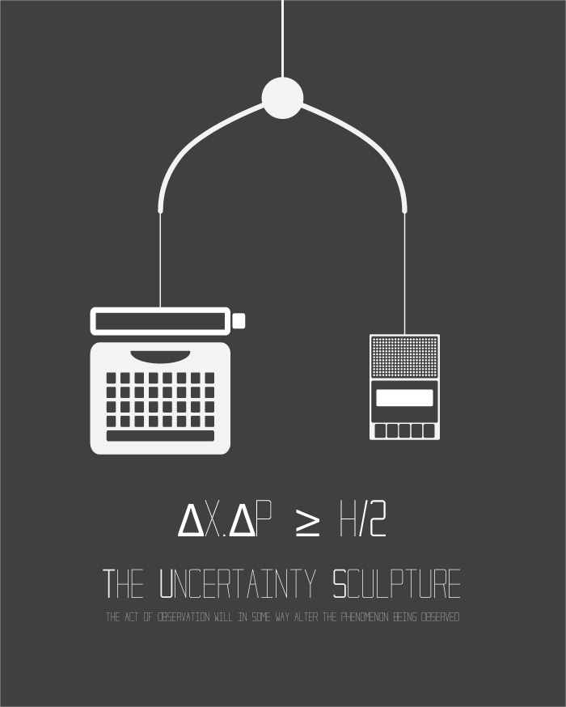
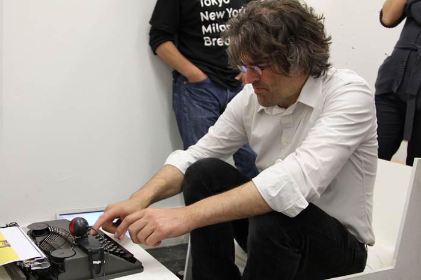
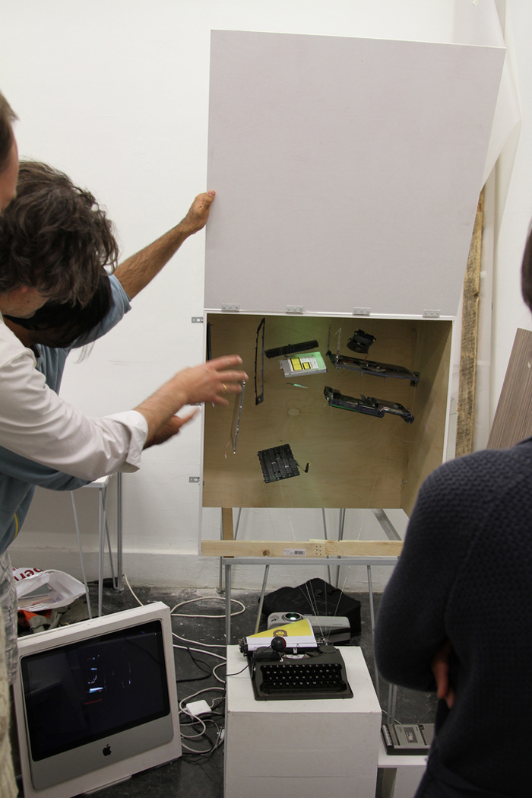
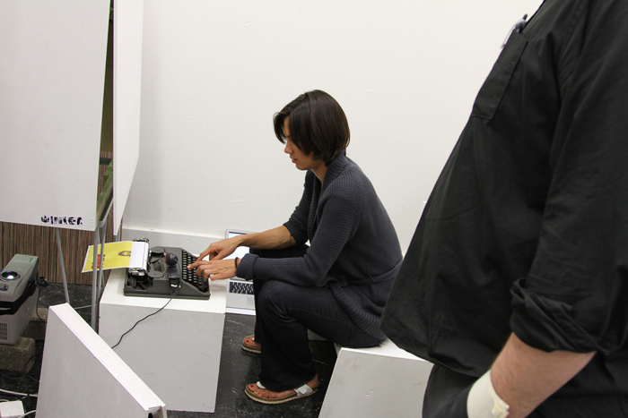

The Uncertainty Sculpture
(Student Work)
It's an interactive installation based on Heisenberg's Uncertainty Principle. The principle states that, the act of observation will in some way alter the phenomenon being observed. Therefore, in order to observe anything in this installation, the user has to modify it in one way or the other...play with it.
It consists of a white cube, a type writer, a cassette player and two computers. The user is unaware of the contents of the box and only through interaction with the setup can he/she determine what's inside.
The tape recorder and typewriter are 'hacked' using an arduino board in such a manner that, once the play button is pressed on the tape recorder the user can use the typewriter as a piano.
As the user types, it causes vibrations in the box and creates visuals on one of the monitors. While, the other displays visuals that react to the notes of the piano.
Made with Processing and Arduino.



